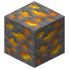
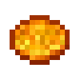
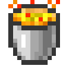
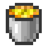
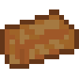

Comment l'obtenir ?
Le Plutonium est un matériel hautement radioactif et instable à sa forme brute, voici comment l’obtenir :
⚠️ Note
Tout le processus de la raffinerie du Plutonium mène jusqu’à l’ingot pur et stable. Ne pas porter de Gants inflige des dégâts et peut être mortel.
| Illustration | Objet | Fonction | Comment l'obtenir |
|---|---|---|---|
|  | Minerai de plutonium instable | Extraire le plutonium instable | Dans l'overworld, de la couche X à X. |
|  | Poussière de Plutonium instable | Tout droit extrait d'un minerai de plutonium instable | Se récupère en cassant le bloc, avec prudence. |
|  | Seau de Plutonium instable brûlant | Sert à purifier et à rendre le plutonium moins radioactif. | En effectuant un clic droit sur un chaudron rempli de lave. |
|  | Seau de Plutonium Stable | Le Plutonium sous forme liquide et stable peut commencer a être utilisé | Après 3 heures conservé dans l’inventaire, le Plutonium devient stable. |
|  | Plutonium pauvre | Permet d’éliminer les impuretés du Plutonium instable et de la lave. | Le Plutonium est obtenu après avoir été filtré, refiltré et refroidi dans le concasseur. |
 |
Plutonium | Un Plutonium stable, pur et prêt à l’emploi. | Le Plutonium pauvre dois être moulé dans un materiel froid, l'or, dans la Presse a métal |